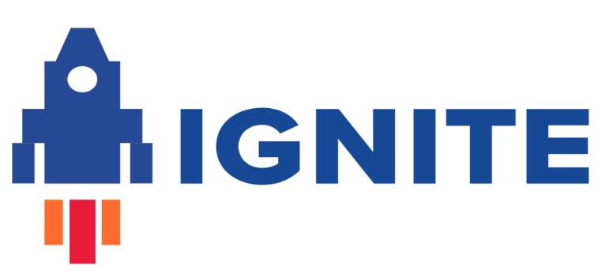

Civic Tech Fredericton
A curated, searchable, bilingual job list for the Fredericton Capital Region.
Project overview & tech stack · November 2026
Where we started
Sept 30, 2026 edition
ATS = BambooHR, Workday, Oracle HCM, Greenhouse, SmartRecruiters, iCIMS, ADP, UltiPro, Avature…
The product
No account needed
Ignite staff
Per deployment
Architecture
Tech stack
apps/webReact Router v8React 19Tailwind v4shadcn/uii18nextVite 8
Framework mode with SSR; URL-prefixed locales /en /fr
apps/apiHonoNode 24Zodopenid-clientsanitize-html
Public read API + moderator API; returns error codes the web app translates
packages/dbPostgreSQL 18Drizzle ORMuuidv7()tsvector FTS
Drizzle owns schema & migrations; Python uses plain SQL against the same tables
scrapers/Python 3.12uvhttpxextructselectolaxpsycopg 3Playwright
FerrisKeyOIDC + PKCEMailpit (dev)
Self-hosted IdP; replaced Clerk in Oct 2026
docker-composeCaddypnpm workspacespytestruffPlaywright e2e
Data model
| Table | Holds |
|---|---|
| sources | A URL to watch: careers page or single posting, detected platform, status |
| scrape_jobs | The work queue: strategy, attempts, run_after, lock, last error |
| postings | Title, org, location, industry, job type, status, origin, search vector |
| editions | A published list: who, when, bilingual title |
| edition_postings | Snapshot membership + is_new flag |
| Table | Holds |
|---|---|
| organizations | Employers, with a normalized name for de-dup |
| locations | {en, fr} names + aliases to match scraped text |
| industries / job_types | Controlled, bilingual taxonomies |
| site_settings | Name, region, locales, branding, per deployment |
| users / sessions | OIDC subject + roles; hashed session tokens |
Posting lifecycle: pending → approved / rejected → closed · origin is scraped or manual
Scrapers
BambooHR, Greenhouse, SmartRecruiters, Workday, Oracle HCM. Picked by host pattern
JobPosting structured data in the page (Venor, CareerBeacon, many employers)
On careers pages, follow links that look like postings and read them the same way
Nothing found or refused? Escalate to the Playwright pool and retry on the rendered DOM
Still nothing: flag the source for moderator entry
SCRAPER_MAX_POSTINGS, default 60)pending; moderators always have the final sayclosedScrapers
| Platform | How | Pool |
|---|---|---|
| BambooHR · Greenhouse · SmartRecruiters | Public JSON API adapter | http |
| Workday · Oracle HCM | API adapter (search filters kept) | http |
| Venor · employer sites | JSON-LD + discovery | http |
| CareerBeacon | Rewritten to /en/job/<id>, JSON-LD | browser |
| UltiPro · ADP | Rendered DOM | browser |
| Indeed | Single viewjob?jk= only, best effort | browser |
| Never fetched | manual |
FOR UPDATE SKIP LOCKED lets many workers claim jobs safelyLISTEN/NOTIFY wakes workers the moment a job is addedTry one URL without touching the DB:uv run ignite-scrape <url>
Moderation
Paste a job link or a careers page. See each scrape’s result, retry, or jump to manual entry.
Approve, reject or close postings; set location, industry and job type.
Manual entry for LinkedIn, Indeed and anything that blocks scrapers.
Preview what’s new or dropped since the last edition, then publish.
Editions are snapshots, so the archive keeps every past list exactly as it was published, and “new” is computed rather than coloured by hand.
Scrapers suggest; moderators decide. Recruiter postings outside the region (e.g. Venor) are rejected in review rather than by brittle rules.
Cross-cutting
/en/… and /fr/…; / picks by cookie → Accept-Language{en, fr}simple, english and french configsunaccent + aliases normalize scraped locationsusers tableRunning it
cp .env.example .env: database, domain, secrets, SMTPdocker-compose up -d --buildpnpm auth:bootstrap --print-env once for the OIDC clientSITE_DOMAIN and auth.SITE_DOMAINNode 24 · pnpm 9 · uv · direnv · Postgres 18direnv exec . pnpm dev → web :3000, API :4000
Status · Nov 19, 2026
Monorepo, compose, schema, seed, API & web skeletons, i18n, sign-in
Search, detail, review queue, manual entry, publish, archive
Queue, worker, platform detection, JSON-LD, sources UI, scrape logs
Next: iCIMS, Avature, UltiPro, ADP, Taleo, Job Bank
Playwright pool with escalation from http
De-dup across boards, taxonomy suggestions, health dashboard, PDF/RSS export
Thank you